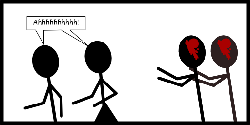
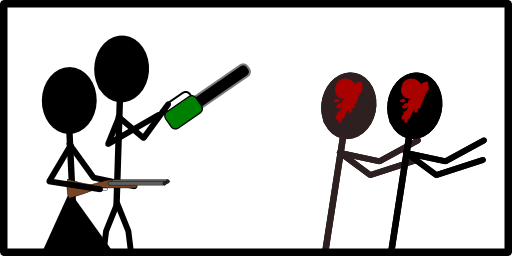
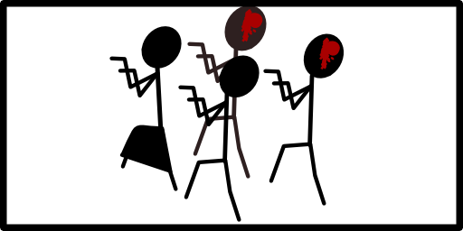

Chapter 8: Storing Lots of Data: Dictionaries
If debugging is the process of removing software bugs, then programming must be the process of putting them in.
-Edsger Dijkstra
So let's say we want to program a zombie simulator. You know, for the eventual uprising.
So let's make a zombie. We'll call him Braaain (it's all he can say). In order to have Braaain be in our game, we need to keep track of a few things about him, such as his speed, his ability to swim, his height, how well he can dance the song Thriller. Think about how you'd store that:
- speed = 5
- swim = false
- height = 70
- dance = "Not Bad"
But let's say we want to make another zombie. We'll call him Grawg. Now we need two sets of variables:
- braaain_speed = 5
- braaain_swim = False
- braaain_height = 70
- braaain_dance = "Not Bad"
- grawg_speed = 3
- grawg_swim = True
- grawg_height = 70
- grawg_dance = "Excellent"
How inefficient! And we know what happens with zombies. First one comes over for dinner and he invites a friend. Next thing you know, there's hundreds of them. There's got to be a better way. Enter dictionaries.
A normal dictionary consists of words and definitions. Back in the olden days, people would leaf through a big huge book and find the word we're looking for. Right next to it would be a definition.
A Python dictionary works much the same way. We enter words, called keys, and their definitions, which we call values. Let's start by creating an empty one.
- braaain = {}
Tada! We have a dictionary. Note the use of the curly brackets (some people call them a leftstache and a rightstache (due to the resemblance to a handlebar mustache, when you turn them sideways).
Now let's add some stuff to them.
- braaain = {}
- braaain['speed'] = 5
- braaain['swim'] = false
- braaain['height'] = 70
- braaain['dance'] = "Not bad"
Now we've got our good friend braaain all in once place. If we want to, instead of creating someone one line at a time, we can create someone all at once.
- grawg = {'speed':3, 'swim':True,'height':70,'dance'="Excellent" }
If Zombies aren't your thing, we could make a phonebook instead.
- phonebook = {}
- phonebook['Jenny'] = "867-5309"
- phonebook['SirMixALot'] = "1-800-mix-a-lot"
Remember that dictionaries are of a set size. That means we can loop through them with a for loop.
- for name,number in phonebook.iteritems():
- print name, '\t', number
This would print out:
Jenny 867-5309 SirMixALot 1-800-max-a-lot
Notice the way we're using iteritems(). A dictionary consists of key:value pairs, so trying to loop through one directly won't necessarily work.
- for i in phonebook:
- print i
Jenny SirMixALot
No phone numbers. But use iteritems() and iteritems() will take care of assigning the key to the first variable and the value to the second. We just used the variables name and number because they made sense. We could have just as easily used k and v for key and value. Remember though, you can just loop through a dictionary like normal if all you need is the key.
Back to the zombies.
It's probably a bit of a pain to create a dictionary for each zombie. In fact, it'd probably be far more efficient to make a dictionary to hold our zombie dictionaries.
- zombies = {'braaain':{'speed':5,'swim':False,'height':70,'dance':"not bad"},'grawg':{'speed':3,'swim':True,'height':70,'dance':"Excellent"}}
We can use our brand new dictionary of zombie dictionaries to perform operations on everyone. Here's a loop that will go through each of our zombies and increase speed by 1.
- for z in zombies:
- zombies[z]['speed']+=1
Check out the use of both sets of brackets. The first set references a specific zombie: z will take on the values braaain and grawg. Out of each of those dictionaries we'll look at what's stored in the value speed and increase it by 1.
Perfect! Now the zombies can eat all of us!
Must... have... braaaaaaaaaain.......
This website will be taken offline before the end of 2011